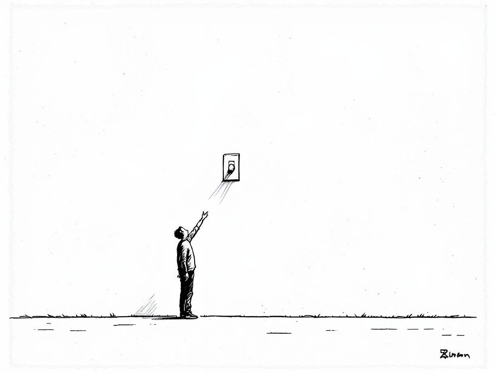
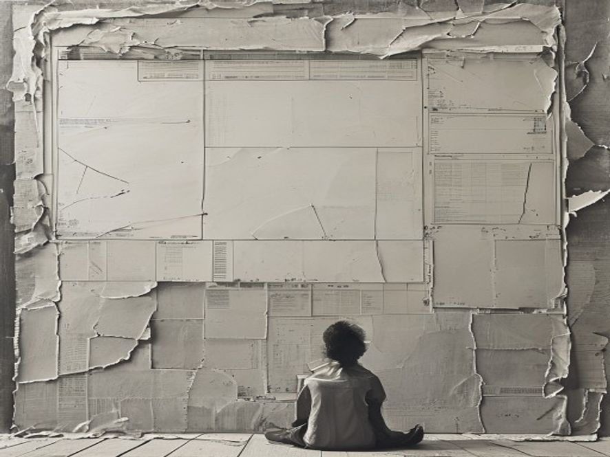
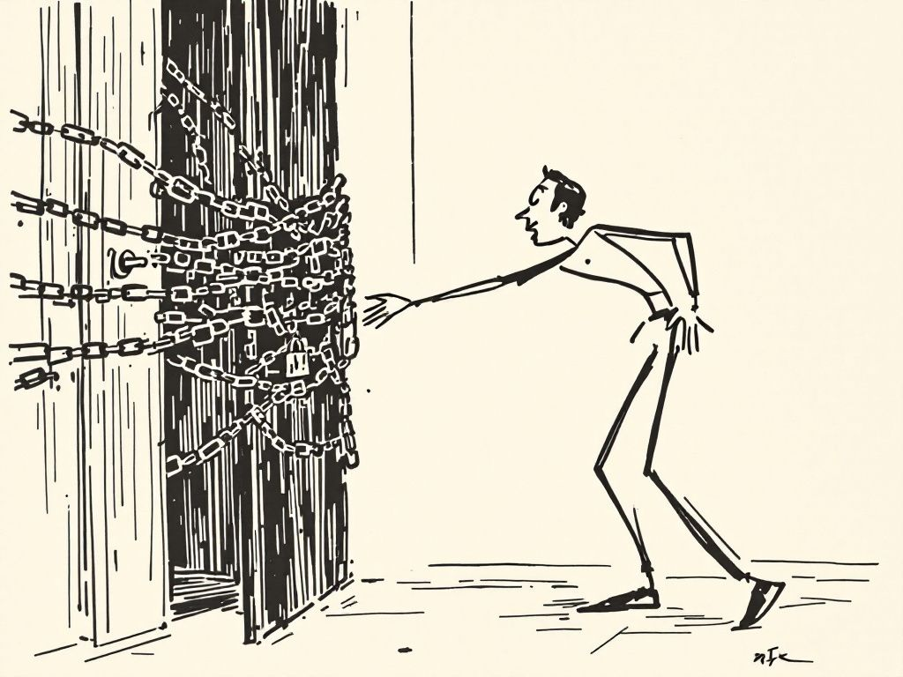
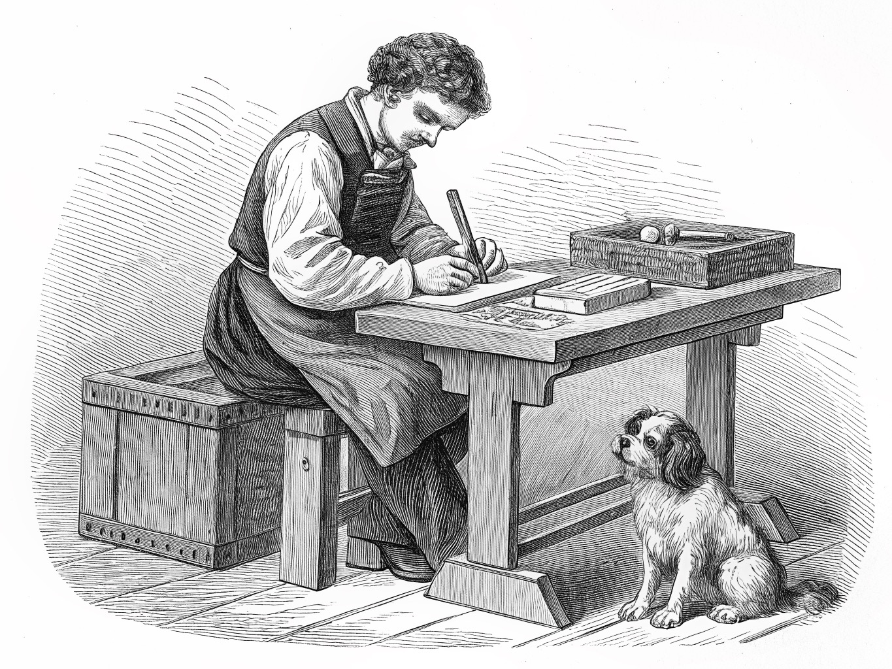

The toggle that swallowed the question. A lone figure on a bare horizon reaching for one small light-switch floating in white space. New Yorker to the bone; carries the title by itself. (Garbled fake signature bottom-right, crop it.)

The dashboard showing nothing. Small figure cross-legged before a wall of blank, torn paper panels. Moodier and quieter than witty; reads as sitting before a report that has nothing to say.

The door you reached for. An eager figure leaning toward a door strangled in chains and a padlock. The "beta you can't open" beat, dead-on. (Came out ink-cartoon, not one-line, but funnier for it.)

The one thing kept. Gorgeous Victorian engraving of a maker at a bench, the little dog beside him. Best craft of the four. TWO flags: (1) the dog read King-Charles-spaniel, not shih tzu (no floor-length coat), breed-likeness TODO; (2) it depicts hands-on making, which is the exact labor the post says isn't the point. Beautiful, but slightly argues with the thesis.